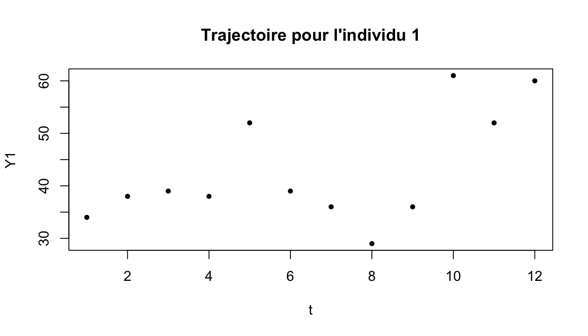
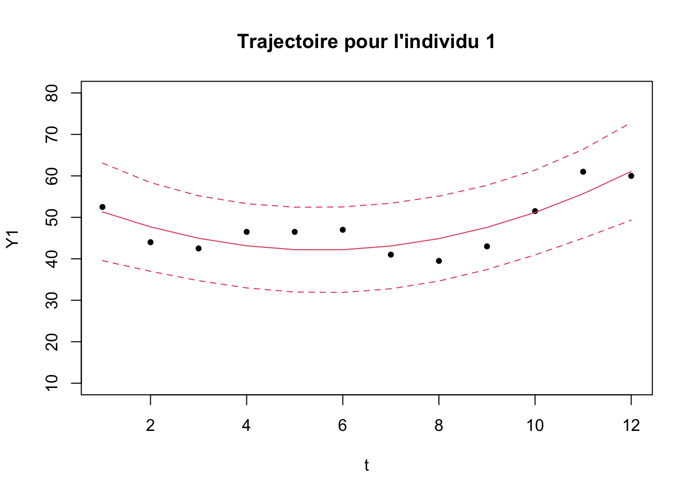
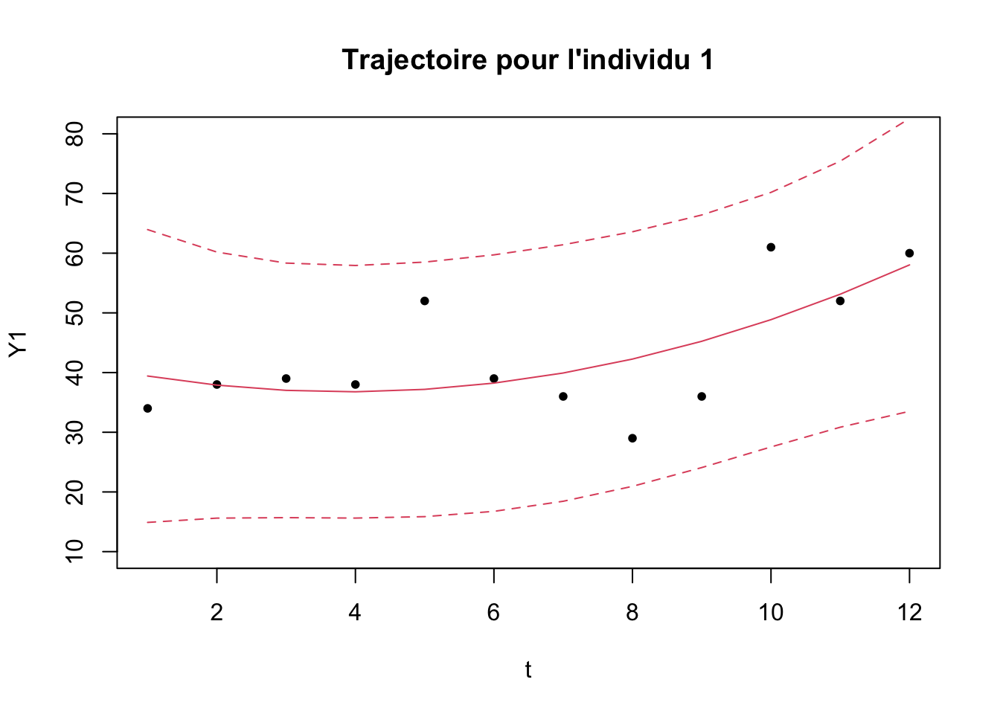

P1
Les données
Les données correspondent aux affects négatifs à faible activation mesurées 12 fois elles sont disponibles ici
## Y1 Y2 Y3 Y4 Y5 Y6 Y7 Y8 Y9 Y10 Y11 Y12
## [1,] 34 38 39 38 52 39 36 29 36 61 52 60
## [2,] 14 18 22 15 8 10 13 22 16 26 50 58
## [3,] 80 70 40 70 75 75 71 6 70 36 32 18
## [4,] 70 65 86 66 68 77 68 64 62 75 73 82
## [5,] 53 66 66 63 63 65 68 60 60 66 70 76
## [6,] 70 86 82 97 79 89 90 93 100 100 100 100\(i=\) 180 et \(t=\) 12.
La modélisation : Trajectoire cubique
On veut estimer les trajectoires temporelles pour chaque individu \(i\) :
\[Y_i(t)=b_{0,i}+b_{1,i} t+ b_{2,i} t^2+ b_{3,i} t^3+\varepsilon_i(t)\]
Par exemple pour l’individu 1 :

Problème de colinéarité dans les modèles de trajectoire :
L’estimation par MCO est instable lorsque les variables explicatives sont colinéaires et dans les modèles de trajectoire c’est le cas :
Xt<-cbind(1,t,t^2,t^3)
# VIF de t^3 en fonction de t et de t^2
1/(1-summary(lm(Xt[,4]~Xt[,2]+Xt[,3]))$r.squared)
## [1] 315.2346\(\leadsto\) Solution : polynomes orthogonaux
Polynômes orthogonaux
On veut déterminer des polynômes \(P_k\) de degré \(k\) qui sont orthogonaux (donc non corrélés) pour \(t=\{1,...,12\}\).
Sur R
X1t<-poly(1:12,3)
par(mfrow=c(1,3))
plot(t,X1t[,1],main="degré 1")
plot(t,X1t[,2],main="degré 2")
plot(t,X1t[,3],main="degré 3")
Estimation MCO
mod1<-lm(Y1~X1t[,1]+X1t[,2]+X1t[,3])
Yp<-predict(mod1,interval="prediction")
## Warning in predict.lm(mod1, interval = "prediction"): predictions on current data refer to _future_ responses
plot(t,Y1,pch=20,main="Trajectoire pour l'individu 1",ylim=c(10,80))
lines(t,Yp[,1],col=2)
lines(t,Yp[,2],col=2,lty=2)
lines(t,Yp[,3],col=2,lty=2)
Le modèle bayésien sur Stan
model<-'
data{
int <lower=1> n;
int <lower=1> T;
int<lower=1> p;
matrix [n,T] y;
matrix [T,p+1] X;
}
parameters {
matrix[n,p+1] beta;
vector[p+1] mu;
vector<lower=0>[p+1] sigma;
real<lower=0> sig;
}
model {
for(t in 1:T){
for (i in 1:n){
y[i,t]~normal(X[t,]*to_vector(beta[i,]),sig);}
}
sig~inv_gamma(.001,.001);
for(k in 1:(p+1)) beta[,k]~normal(mu[k],sigma[k]);
mu~normal(0,100);
sigma~inv_gamma(.001,.001);
}
'